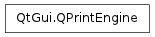

QPrintEngine ¶

Detailed Description ¶
The PySide.QtGui.QPrintEngine class defines an interface for how PySide.QtGui.QPrinter interacts with a given printing subsystem.
The common case when creating your own print engine is to derive from both PySide.QtGui.QPaintEngine and PySide.QtGui.QPrintEngine . Various properties of a print engine are given with PySide.QtGui.QPrintEngine.property() and set with PySide.QtGui.QPrintEngine.setProperty() .
See also
- class PySide.QtGui. QPrintEngine ¶
- PySide.QtGui.QPrintEngine. PrintEnginePropertyKey ¶
-
This enum is used to communicate properties between the print engine and PySide.QtGui.QPrinter . A property may or may not be supported by a given print engine.
Constant Description QPrintEngine.PPK_CollateCopies A boolean value indicating whether the printout should be collated or not. QPrintEngine.PPK_ColorMode Refers to QPrinter.ColorMode , either color or monochrome. QPrintEngine.PPK_Creator A string describing the document’s creator. QPrintEngine.PPK_Duplex A boolean value indicating whether both sides of the printer paper should be used for the printout. QPrintEngine.PPK_DocumentName A string describing the document name in the spooler. QPrintEngine.PPK_FontEmbedding A boolean value indicating whether data for the document’s fonts should be embedded in the data sent to the printer. QPrintEngine.PPK_FullPage A boolean describing if the printer should be full page or not. QPrintEngine.PPK_NumberOfCopies Obsolete. An integer specifying the number of copies. Use PPK_CopyCount instead. QPrintEngine.PPK_Orientation Specifies a QPrinter.Orientation value. QPrintEngine.PPK_OutputFileName The output file name as a string. An empty file name indicates that the printer should not print to a file. QPrintEngine.PPK_PageOrder Specifies a QPrinter.PageOrder value. QPrintEngine.PPK_PageRect A PySide.QtCore.QRect specifying the page rectangle QPrintEngine.PPK_PageSize Obsolete. Use PPK_PaperSize instead. QPrintEngine.PPK_PaperRect A PySide.QtCore.QRect specifying the paper rectangle. QPrintEngine.PPK_PaperSource Specifies a QPrinter.PaperSource value. QPrintEngine.PPK_PaperSources Specifies more than one QPrinter.PaperSource value. QPrintEngine.PPK_PaperSize Specifies a QPrinter.PaperSize value. QPrintEngine.PPK_PrinterName A string specifying the name of the printer. QPrintEngine.PPK_PrinterProgram A string specifying the name of the printer program used for printing, QPrintEngine.PPK_Resolution An integer describing the dots per inch for this printer. QPrintEngine.PPK_SelectionOption QPrintEngine.PPK_SupportedResolutions A list of integer QVariants describing the set of supported resolutions that the printer has. QPrintEngine.PPK_SuppressSystemPrintStatus Suppress the built-in dialog for showing printing progress. As of 4.1 this only has effect on Mac OS X where, by default, a status dialog is shown. QPrintEngine.PPK_WindowsPageSize An integer specifying a DM_PAPER entry on Windows. QPrintEngine.PPK_CustomPaperSize A PySide.QtCore.QSizeF specifying a custom paper size in the QPrinter.Point unit. QPrintEngine.PPK_PageMargins A QList < PySide.QtCore.QVariant > containing the left, top, right and bottom margin values. QPrintEngine.PPK_CopyCount An integer specifying the number of copies to print. QPrintEngine.PPK_SupportsMultipleCopies A boolean value indicating whether or not the printer supports printing multiple copies in one job. QPrintEngine.PPK_CustomBase Basis for extension.
- PySide.QtGui.QPrintEngine. abort ( ) ¶
-
Return type: PySide.QtCore.bool Instructs the print engine to abort the printing process. Returns true if successful; otherwise returns false.
- PySide.QtGui.QPrintEngine. metric ( arg__1 ) ¶
-
Parameters: arg__1 – PySide.QtGui.QPaintDevice.PaintDeviceMetric Return type: PySide.QtCore.int
- PySide.QtGui.QPrintEngine. newPage ( ) ¶
-
Return type: PySide.QtCore.bool Instructs the print engine to start a new page. Returns true if the printer was able to create the new page; otherwise returns false.
- PySide.QtGui.QPrintEngine. printerState ( ) ¶
-
Return type: PySide.QtGui.QPrinter.PrinterState Returns the current state of the printer being used by the print engine.
- PySide.QtGui.QPrintEngine. property ( key ) ¶
-
Parameters: key – PySide.QtGui.QPrintEngine.PrintEnginePropertyKey Return type: object Returns the print engine’s property specified by key .
- PySide.QtGui.QPrintEngine. setProperty ( key , value ) ¶
-
Parameters: - key – PySide.QtGui.QPrintEngine.PrintEnginePropertyKey
- value – object
Sets the print engine’s property specified by key to the given value .
See also